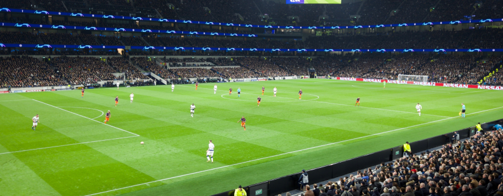

Tentang
Tottenham Hotspur Football Club /ˈtɒtənəm/, adalah klub sepak bola yang berasal dari Tottenham, sebuah daerah yang berada di wilayah utara London. Mereka juga dikenal sebagai Spurs, The Spurs dan Tottenham, sementara penggemar mereka memberi mereka nama the Lilywhites karena seragam tradisional mereka yang berwarna putih. Didirikan pada tahun 1882, Tottenham memenangkan Piala FA untuk pertama kalinya pada tahun 1901, dan menjadi satu-satunya klub non-Liga yang menjuarai Piala FA, sejak dibentuknya The Football League. Pada musim 1960-61, Tottenham adalah klub pertama pada abad ke-20 yang meraih gelar ganda sebagai juara Liga dan Piala FA. Setelah berhasil mempertahankan Piala FA pada tahun 1962, Tottenham menjadi klub Inggris pertama yang memenangkan kompetisi klub UEFA dengan menjadi juara Piala Winners UEFA pada tahun 1963. Piala FA yang ketiga kalinya pada tahun 1960-an, dimenangkan pada tahun 1967.